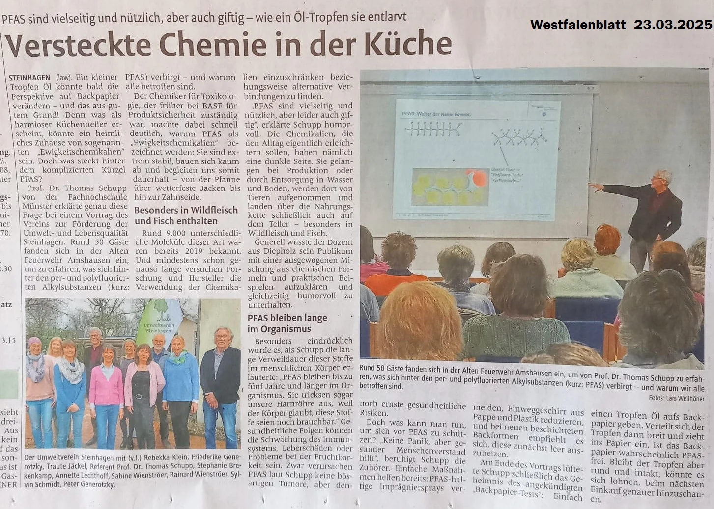

Der Name steht für per- und polyfluorierte Alkylsubstanzen. Wegen ihrer extremen Langlebigkeit in der Umwelt werden sie oft auch als „Ewigkeits-Chemikalien“ (forever chemicals) bezeichnet.
Welche Gefahren gehen von PFAS aus?
- Bioakkumulation: Die Stoffe verbreiten sich global in den Umweltmedien Wasser, Boden und Luft. Über diesen Weg gelangen sie in die menschliche Nahrungskette und das Trinkwasser.
- Chronische Toxizität: PFAS verbleiben langfristig im menschlichen Organismus. Wissenschaftliche Studien verknüpfen eine dauerhafte Aufnahme mit einer Schwächung des Immunsystems, einer Beeinträchtigung der Fertilität, erhöhten Cholesterinwerten sowie einem erhöhten Krebsrisiko.
Vertiefende Informationen zu Vorkommen und Grenzwerten finden Sie beim Umweltbundesamt und der Verbraucherzentrale.
Wie kommen die „Ewigkeitschemikalien“ (PFAS) in unser Essen?
Das passiert auf zwei Wegen:
- Über die Umwelt: PFAS reichern sich in Böden, Futtermitteln, der Luft und im Bewässerungswasser an. So gelangen sie direkt in die Nahrungskette.
- Über die Verpackung: Warme oder fettige Lebensmittel können die Chemikalien aus beschichteten Papier- und Pappverpackungen (z. B. Fast-Food-Tüten oder Pizzakartons) herauslösen.
Bei der Belastung von Lebensmitteln mit langlebigen Chemikalien zeigen sich deutliche Unterschiede je nach Herkunft und Tierart. Besonders betroffen sind Raub- und Süßwasserfische aus belasteten Gewässern sowie Innereien, allen voran Wildschwein- oder Schafsleber. Auch Hühnereier aus Freiland- oder Hobbyhaltung weisen häufiger Kontaminationen auf, da die Tiere Schadstoffe über den Boden aufnehmen. Zudem können Muscheln, Meeresfrüchte und Wildfleisch – je nach Zustand des jeweiligen Lebensraums – erhebliche Rückstände enthalten.